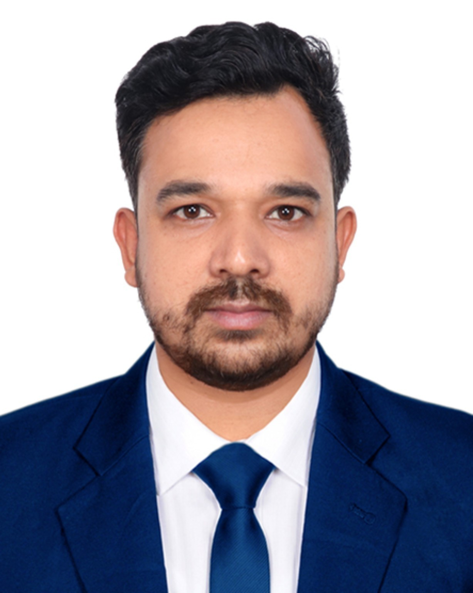
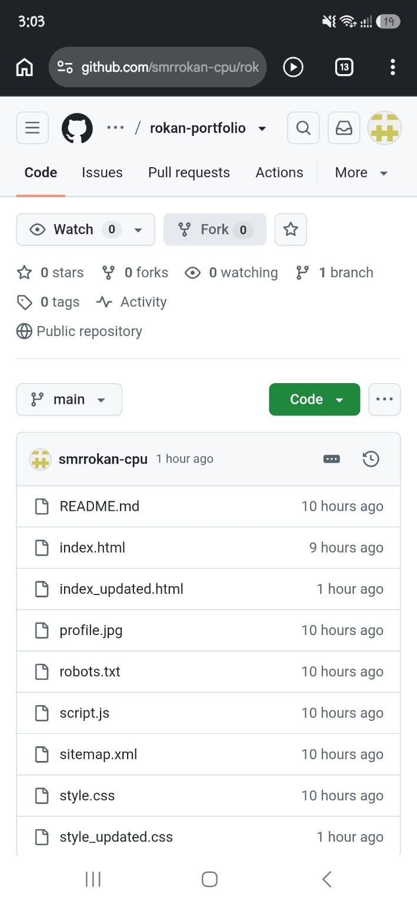
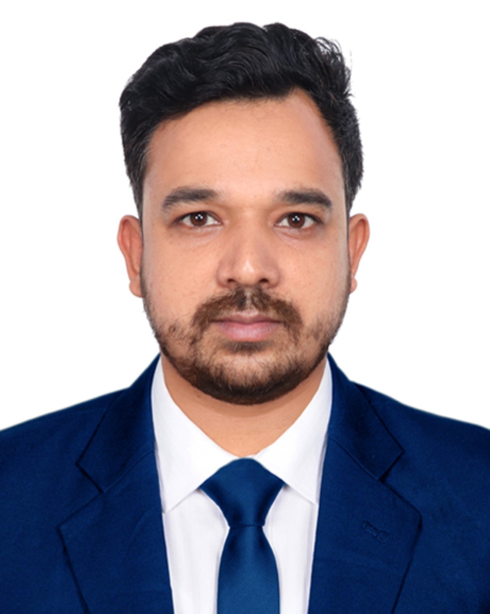
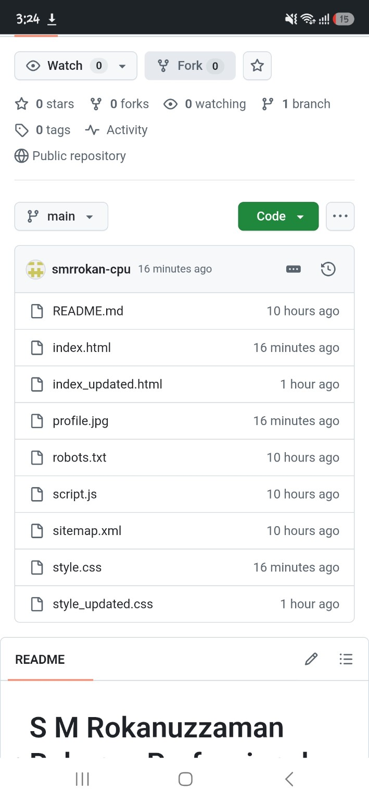
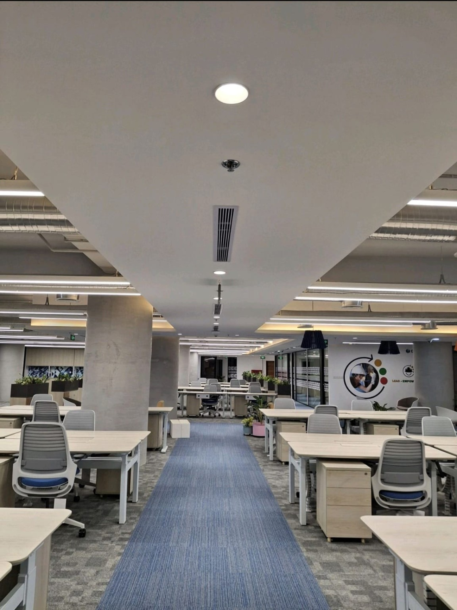
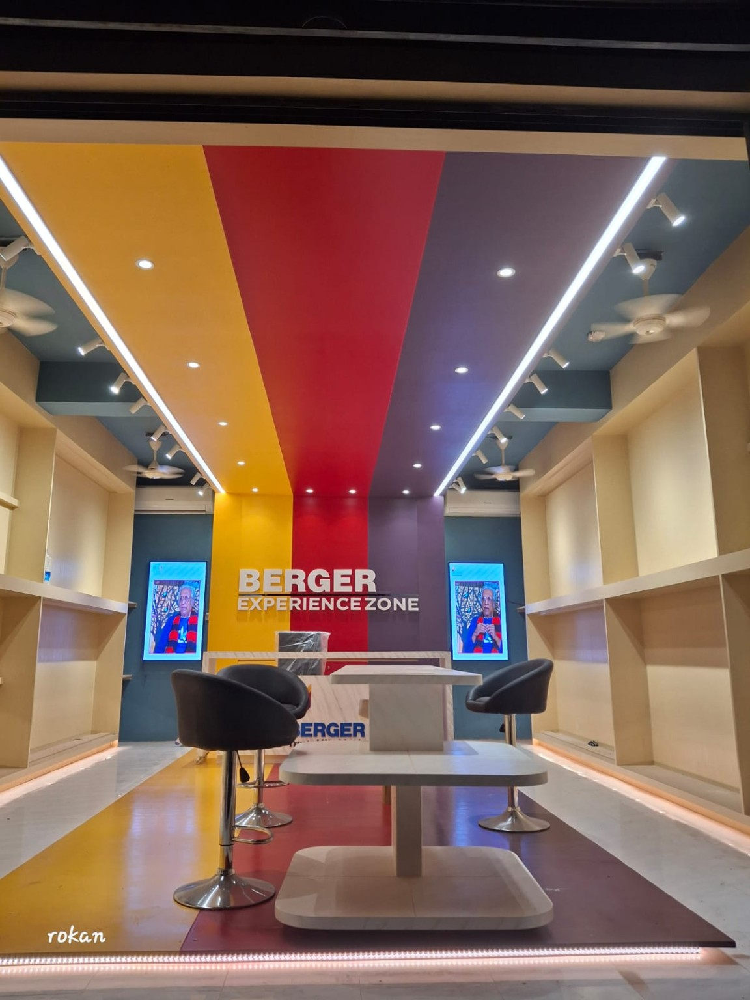
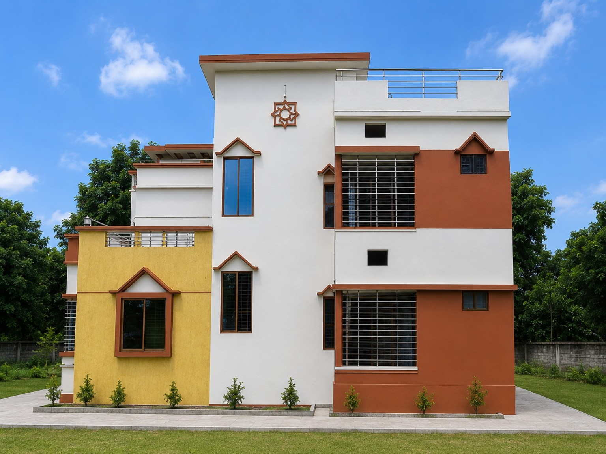

Project Engineering
Project execution, coordination, documentation and technical follow-up.
PROJECT ENGINEER · DHAKA, BANGLADESH
Project Engineer | Interior Fit-Out & Project Execution | BOQ · RCQ/RFQ · Estimation & Cost Control | Site Supervision | Quality Control | Contractor & Vendor Coordination
Civil Engineering professional with hands-on experience in interior fit-out, renovation, project estimation, site execution, supervision and project coordination.

01 / ABOUT
I am a Project Engineer with a Civil Engineering background and hands-on professional experience in interior fit-out, renovation, project estimation, site execution, supervision, and project coordination.
My professional experience includes BOQ preparation, RCQ/RFQ, project cost estimation, cost control, interior work supervision, site supervision, quality control, contractor and subcontractor coordination, material and supplier sourcing, vendor management, inventory tracking, project documentation, daily site reporting, client communication, and progress monitoring.
I focus on delivering projects with strong attention to detail, effective coordination, quality execution, proper documentation, and timely completion.
I am interested in connecting with professionals, organizations, contractors, consultants, interior companies, and project teams working in construction, interior fit-out, renovation, project management, and engineering.
02 / PROFESSIONAL FOCUS
Execution-focused support across technical, commercial, site and coordination responsibilities.
Project execution, coordination, documentation and technical follow-up.
Interior installation, renovation, finishing works and site execution.
Quantity work, BOQ preparation, quotation support and procurement coordination.
Estimation, cost monitoring, material control and project cost coordination.
Monitoring site activities, quality, progress and timely execution.
Quality checks, finishing follow-up and compliance with project requirements.
Coordination with contractors, subcontractors, suppliers and vendors.
Daily reports, progress records, project documentation and client updates.
03 / EXPERIENCE
Experience presented in the same order and with the core responsibilities shown on LinkedIn.
04 / EDUCATION
Civil Engineering education from school through undergraduate level.
BSc in Civil Engineering, Civil Engineering
Sep 2017 — Oct 2020 · Grade: 3.21Diploma in Civil Engineering, Civil Engineering
Nov 2012 — Jul 2017 · Grade: 2.71Secondary School Certificate
Jan 2006 — Apr 2011 · Grade: 4.9405 / SKILLS
Skills and project-linked capabilities visible on the LinkedIn profile screenshots.
06 / PROJECTS
Project names connected to the skills shown on the LinkedIn profile and the existing portfolio.

SITE SUPERVISION · BOQ · QUALITY
Project-linked experience covering site supervision, BOQ, project engineering, project management, documentation and quality control.

BERGER HOUSE · HR OFFICE
Interior project experience involving cost estimation, cost management, BOQ/RFQ, vendor coordination, quality control and project documentation.

NIKUNJA-1
Interior fit-out and renovation-related project work with site supervision, client communication and contractor/vendor coordination.



07 / LINKEDIN ACTIVITY
Public-facing profile information is summarized here; private LinkedIn analytics are intentionally not exposed.
LinkedIn activity includes project handover and interior/project execution updates, including a handover project at Gildan Bangladesh, G.A.B Ltd, Gulshan-2 and Myth Limited.
View LinkedIn Activity ↗08 / CONTACT
Open to professional networking, collaboration and suitable Project Engineer / Interior Project opportunities.